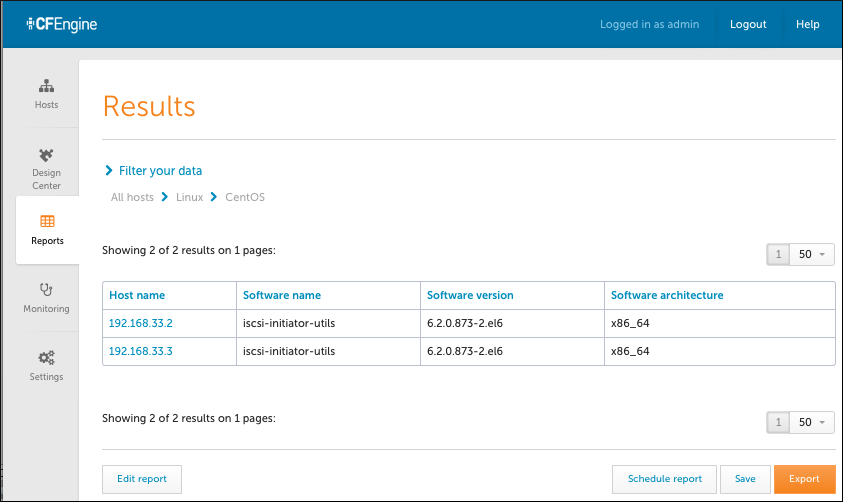

Configure and Deploy a Policy Using Sketches
Note: This tutorial is for Enterprise users who have access to the Mission Portal application. CFEngine must be up and running in order to complete this tutorial.
Overview
In this tutorial, we want to implement the following policy: The iscsi-initatior-utils software package should be present/installed on all hosts. Since CFEngine has a sketch that can generate this policy, we will use it to deploy our policy. (Note that you may use an alternate package from your system's package repository.)
A sketch defines configurable and reusable policy. You can use sketches to implement, activate, or enforce policy. Sketches are written in the CFEngine policy language; you can use them simply by installing them, configuring them using the appropriate parameters and environments, and deploying them on your infrastructure.
This tutorial provides instructions for the following:
Configure and deploy a policy using sketches in the Design Center
Verify sketch deployment using Reports in the Mission Portal
Create a query to narrow results using Report Builder in the Mission Portal
Configure and deploy a policy using sketches in the Design Center
We will activate the Packages sketch which allows you to install selected software packages on specific hosts. A sketch must include a parameter set and an environment(s), both of which we will set in the example below. Make certain that the packages you select are included in the package repository. (The package in our example below is available in the Centos package repository. You can select any package that is available through your operating system's package repository.)
Log in to the Mission Portal. Select Design Center from the left sidebar.
Select the Packages::installed sketch. Use the following values:
a. Descriptive name: Enter Install iSCSI. This allows you to recognize the activation (and its goal) later, as the Design Center uses this name when it commits changes to Git.
b. Packages that should be installed: Fill in the name of the package that must be installed. For this example, use iscsi-initiator-utils. This is the parameter set.
c. Hosts to activate on: Click Select category to display host options. Select All hosts for our example. All host names appear. This is the environment in which the sketch must be activate.
Here is an example:

Click Activate. This deploys the sketch to all hosts.
Enter a description in the Commit your changes window that appears. The Design Center uses this comment for version control when it commits changes to Git. Click Commit to complete the change.
When a sketch is activated, the following occurs:
The policy that is generated when the sketch is activated gets committed to your Git repository. This allows you to keep track of who has made what changes, and when, and why.
The policy server is typically configured to check the Git repository every five minutes to ensure that it is running the latest version of available policies. This process can be handled manually as well.
The hosts check with the policy server for updated policy. They also work on default intervals of five minutes.
The policy server collects information from the agents on the hosts to obtain insight into the progress with executing the sketch. The information it collects is used to update the information in the Design Center.
In total, this process might take a few minutes to converge to the correct state for all hosts. The process is very scalable, so even if it takes a few minutes for the two servers in this example to be updated, it does not take much longer to update 2,000 servers. If you check back with the Packages sketch in the middle of the activation process, you will see a message that reads Status: Being Activated. Upon successful completion, the window should look like this:

Now that the sketch is deployed, CFEngine continuously verifies that it is maintained. It checks 365 days per year, 24 hours per day, 12 times per hour to make certain this package is on all of the hosts. If the package is removed, it is added within five minutes, and CFEngine creates reports that it made a repair. Thus, the state of the overall system is known and stable and system drift is avoided. This works for 2, 20, 200, 2,000 or 20,000 servers.
Verify sketch deployment using Reports in the Mission Portal
The Mission Portal contains standard Reports to facilite systems monitoring and management. We will use the Software installed Report to verify that the Packages sketch we just activated has been deployed.
Log in to the Mission Portal. Select Reports from the left sidebar.
Select the Software installed report from the list of reports that appear.
Scroll through the Software installed report to find the iscsi-initiator-utils software. To hasten your search, click the SoftwareName column in order to alphabetize the results. Another option is to create a query in the Report Builder, which is described below.
The table shows that the iscsi-initiator-utils software is installed on both hosts:

Create a query to narrow results using Report Builder in the Mission Portal
Use the Report builder to create queries. In our example, we will create a query to verify that the Packages sketch we just activated was deployed and that our software was installed.
Log in to the Mission Portal. Select Reports from the left sidebar.
Click New report to open the Report builder.
Under Tables, select Hosts and then Software.
Enter the following Field values for the Hosts and Software tables:
a. For Hosts Fields, select Host name.
b. For Software Fields, select, and in the order shown: Software name, Software version, Software architecture. Note that the Mission Portal creates Fields in the order that you select them.
Under Filters, click Add. Under Software, select Software name. For the Software name filter, select equals = and then enter iscsi-initiator-utils.
Click Show Query to view the SQL query that is generated from your selection.
Your completed query should look similar to this example:

Click Run. The Results reveal that the policy was generated when the sketch was deployed and activated on both hosts.
